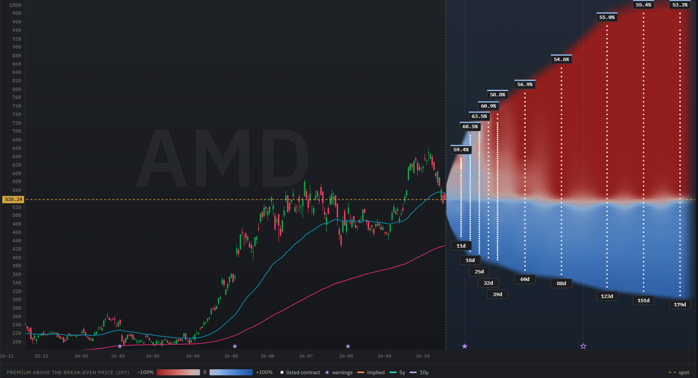
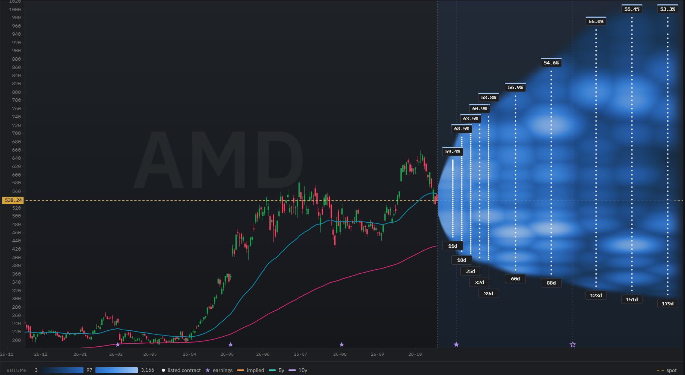

Put credit spreads: how to sell premium with defined risk
A put credit spread pays you a premium like a sold put, but caps the largest possible loss from the moment you open it. This guide shows how to pick its two strikes and how to tell whether a spread pays enough to be worth selling. Throughout the guide we work through a real example: AMD's option chain on 19 October 2026, analyzed with OptionsCone.
In short: OptionsCone colors every strike and expiry of AMD by its probability, so the strikes the price is unlikely to reach stand out at a glance. For every contract it also shows a fair premium, judged by AMD's own realized moves. A put credit spread is worth selling when the credit you receive is higher than the fair premium of the short put minus the fair premium of the long put, and OptionsCone shows both numbers side by side.
What is a put credit spread?
A put credit spread, also called a bull put spread or credit put spread, is an option strategy with two puts of the same expiration:
- You sell a put below the current stock price and receive its premium.
- You buy a put with a lower strike, which costs less than the sold put pays.
The difference is your net credit. If AMD stays above the short strike, both puts expire worthless and you keep the credit. If AMD falls below the long strike, the bought put pays out for every dollar the sold put loses, so the loss stops there. The largest possible loss is the width between the strikes minus the credit, times 100 per spread.
Why a put credit spread on a stock with a high share price
A put credit spread is a smart way to sell premium on a stock with a high share price. With AMD at $538, a cash secured put would tie up about $54,000 in cash for a single contract, and its largest loss is nearly that amount if the stock collapses. A spread with strikes 10 points apart ties up only the width, $1,000 minus the credit, and that is also its largest possible loss. You give up part of the premium in exchange, because the bought put costs money. How the strike of the sold put is chosen is covered in detail in the cash secured put guide.
Choosing the short strike from the probability cone
Download AMD in OptionsCone and look at the cone below the price. Its coloring shows the probability of every strike and expiry at a glance: dark where AMD is likely to reach the strike, pale where it is not. The short put belongs where the cone turns pale enough for your taste, while the premium is still worth having.
Hover over any contract to see its probabilities in detail: how likely AMD touches the strike before expiry and how likely it finishes below it, from option prices and from AMD's own realized moves. Laid side by side, these numbers make it easy to compare candidates for the short strike.
Two numbers decide a put credit spread at expiry. The spread loses money if AMD finishes below the short strike minus the credit, which is its break-even point. It loses the most if AMD finishes below the long strike. The cone shows the probability of both levels.
Is this put credit spread worth selling?
The probability shows how often a spread would lose. It does not show whether the credit pays enough for that. For this, OptionsCone shows a fair premium for every contract: the premium that would be fair for AMD's own realized moves.
A spread is the combination of two contracts, so its fair value is the difference of the two fair premiums. OptionsCone makes it easy to see whether a put credit spread is worth selling:
If the credit is higher, the spread pays more than AMD's realized moves would justify. If it is lower, you would be selling it below its fair value. The same comparison works for each leg on its own: the fair premium of the short put is the minimum premium worth accepting for it, and the bid you can sell at should be above it.

What the protection costs: implied volatility and skew
Puts further below the price usually trade at a higher implied volatility than puts close to it. This pattern is called the volatility skew, and it means the bought put of a spread is priced at a higher volatility than the sold one. That extra volatility is the price of capping the risk.
The IV map shows how steep the skew is between your two strikes. In AMD's November expiry, on 19 October 2026, implied volatility rose from 58.2% at the 520 put to 66.3% at the 400 put, about 8 points. In the December expiry the same range rose from 53.1% to 58.7%, about 6 points. The flatter the skew between the two strikes, the less you pay for the protection.
The same map shows the term structure: the November expiry trades at a clearly higher volatility than December. When one expiry stands out like that, it often contains an event such as an earnings report, which the markers on the date axis show.
How wide should a put credit spread be?
The distance between the strikes sets the balance between credit and largest loss. A narrow spread collects little and can lose little. A wide spread collects more, but can lose more, and moves closer to a plain sold put. Many traders compare the credit with the width: the larger the share of the width you collect, the closer the short strike sits to the price and the more likely the spread is to lose. With the probability of both strikes and the fair value of the spread next to each other, you can compare widths on the same terms.
Which expiry for a put credit spread?
The same rules as for a single sold put apply. Shorter spreads lose time value faster, longer ones give AMD more time to fall to the short strike. An expiry that includes an earnings report pays more, because the stock can open far below the previous close, past both strikes. The volatility badge above each expiry and the earnings markers show where that happens.
Liquidity: two legs, two spreads
A put credit spread is traded as two contracts, so the bid-ask spread is paid twice, once on each leg. Switch the cone to spread and volume: the tighter the quotes and the more contracts traded at both strikes, the closer to the fair value you can open and later close the position. In the volume map of this example, the lighter spots mark the strikes and expiries where more contracts traded. The contract details that open for each option show whether its quote is reliable enough to read a volatility from, with a yellow or red mark where it is not. Legs with such a mark make a spread harder to price and to trade.

Checking both legs in OptionsCone
Click the short put and its tooltip stays open. Step to the long put with the arrow keys: down moves to the next lower strike of the same expiry, and the tooltip follows. Left and right move to the neighboring expiry. Switch between the maps to read each leg's probability, fair premium, implied volatility and spread, and compare the two legs in a few seconds.
Worked example: three AMD put credit spreads compared
From a download of AMD on 19 October 2026 at 14:23, with the stock at $538.24. These figures illustrate the comparison and are not a recommendation.
| Spread | Width | Credit | Fair value (short − long) | Largest loss | Below short strike (option prices) | Below short strike (AMD's moves) |
|---|---|---|---|---|---|---|
| 480 / 470, 20 Nov (32 days) | $10 | $2.10 | $1.82 | $790 | 28.2% | 20.0% |
| 440 / 430, 20 Nov (32 days) | $10 | $0.75 | $0.60 | $925 | 15.3% | 7.8% |
| 460 / 450, 18 Dec (60 days) | $10 | $1.50 | $1.72 | $850 | 26.6% | 19.2% |
Data: AMD option chain, downloaded on 19 October 2026 at 14:23 New York time, quotes delayed about 15 minutes. Credits at the bid of the short put and the ask of the long put, per share, largest loss per spread. All figures calculated with OptionsCone.
Read it as: The November 480/470 spread collects $2.10, 28 cents more than its fair value, and AMD's realized moves put its chance of finishing below the short strike at 20%, against 28% from option prices. The 440/430 spread sits further away and also pays above its fair value, but its credit of $0.75 is small against a largest loss of $925. The December 460/450 spread pays $1.50, below its fair value of $1.72, because the wide quote of the 450 put costs most of the difference, and at the mid prices of both legs it would collect $2.15. AMD reports earnings on 3 November, inside both expiries.
Put credit spread FAQ
What is the difference between a put credit spread and a bull put spread?
None. Put credit spread, credit put spread and bull put spread are names for the same strategy: a sold put and a bought put with a lower strike and the same expiration.
Put credit spread or cash secured put?
A cash secured put ties up the cash to buy 100 shares at the strike, which is a lot on a stock with a high share price. A put credit spread earns less premium, but ties up only the width of the spread, and its largest loss is fixed at entry.
When is a put credit spread worth selling?
When the net credit you receive is higher than the fair premium of the short put minus the fair premium of the long put, judged by the stock's own realized moves. OptionsCone shows the fair premium of every contract, so the comparison takes two clicks.
How wide should a put credit spread be?
A narrow spread has a small largest loss and a small credit. A wider spread collects more credit but can lose more. Many traders compare the credit with the width: the larger the share of the width you collect, the closer the short strike sits to the price.
What is the maximum loss of a put credit spread?
The width between the two strikes minus the credit received, times 100 per spread. It occurs if the stock finishes below the lower strike at expiry.
We use AMD as an example. The same steps work for any stock with listed options. Nothing on this page is a recommendation to buy or sell AMD stock or options.
Try it on your own stock
Every figure on this page comes from one download and a few clicks. The manual explains each control.